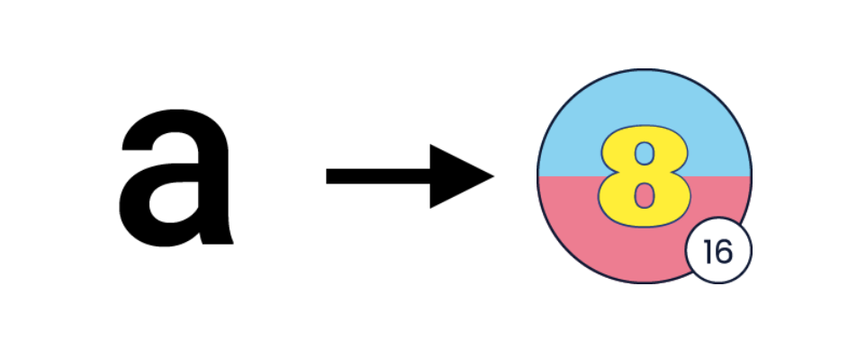
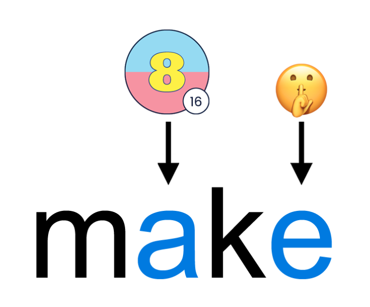

Daily Advance
Daily Lesson Schedule for SMART Courses
WEEK 1
| DAY |
PART A |
PART B |
Monday 1
(Group A)
|
L1 and L2 |
L21 and L22 |
Tuesday 1
(Group B)
|
L1 and L2 |
L21 and L22 |
Wednesday 1
(Group A)
|
L3 and L4 |
L23 and L24 |
Thursday 1
(Group B)
|
L3 and L4 |
L23 and L24 |
WEEK 2
| DAY |
PART A |
PART B |
Monday 2
(Group A)
|
L5 and L6 |
L25 and L26 |
Tuesday 2
(Group B)
|
L5 and L6 |
L25 and L26 |
Wednesday 2
(Group A)
|
L7 and L8 |
L27 and L28 |
Thursday 2
(Group B)
|
L7 and L8 |
L27 and L28 |
WEEK 3
| DAY |
PART A |
PART B |
Monday 3
(Group A)
|
L9 and L10 |
L29 and L30 |
Tuesday 3
(Group B)
|
L9 and L10 |
L29 and L30 |
Wednesday 3
(Group A)
|
L11 and L12 |
L31 and L32 |
Thursday 3
(Group B)
|
L11 and L12 |
L31 and L32 |
WEEK 4
| DAY |
PART A |
PART B |
Monday 4
(Group A)
|
L13 and L14 |
L33 and L34 |
Tuesday 4
(Group B)
|
L13 and L14 |
L33 and L34 |
Wednesday 4
(Group A)
|
L15 and L16 |
L35 and L36 |
Thursday 4
(Group B)
|
L15 and L16 |
L35 and L36 |
Bonus Lessons
The platform includes 20 lessons per level. However, for the SMART
course, the last 4 lessons will be considered “Bonus Lessons” since
only 16 lessons can realistically be covered during each cycle due
to scheduling and time limitations. The Bonus Lessons are: Lessons
17–20 in Part A and Lessons 37–40 in Part B. These lessons should
NOT be taught in class during the SMART course. They are available
only as optional review material for students to study independently
on the platform if they choose to do so.
Holidays
Whenever there is a holiday during the cycle, the lesson taught on
the next class day must be the next lesson in the program.
NEVER SKIP ANY LESSONS! An additional class day
must be scheduled with the Branch Director to make up for the
holiday (usually on Fridays), since in the SMART course, all 16
scheduled lessons must be fully covered without exception.
Daily Lesson Schedule for V-SMART courses
WEEK 1
| DAY |
PART A |
PART B |
|
Monday 1
|
L1 |
L21 |
|
Tuesday 1
|
L2 |
L22 |
|
Wednesday 1
|
L3 |
L23 |
|
Thursday 1
|
L4 |
L24 |
|
Friday 1
|
L5 |
L25 |
WEEK 2
| DAY |
PART A |
PART B |
|
Monday 2
|
L6 |
L26 |
|
Tuesday 2
|
L7 |
L27 |
|
Wednesday 2
|
L8 |
L28 |
|
Thursday 2
|
L9 |
L29 |
|
Friday 2
|
L10 |
L30 |
WEEK 3
| DAY |
PART A |
PART B |
|
Monday 3
|
L11 |
L31 |
|
Tuesday 3
|
L12 |
L32 |
|
Wednesday 3
|
L13 |
L33 |
|
Thursday 3
|
L14 |
L34 |
|
Friday 3
|
L15 |
L35 |
WEEK 4
| DAY |
PART A |
PART B |
|
Monday 4
|
L16 |
L36 |
|
Tuesday 4
|
L17 |
L37 |
|
Wednesday 4
|
L18 |
L38 |
|
Thursday 4
|
L19 |
L39 |
|
Friday 4
|
L20 |
L40 |
Holidays
Whenever there is a holiday in the cycle, the lesson to teach
the day after the holiday will be the next one in the program.
NEVER SKIP ANY LESSONS! At the end of the course,
lessons 20 and 40 will not be taught.
Steps of the method
-
Class routine
a. Give a brief explanation of the Educational Objective in English.
Make sure you clearly explain the objective and the skills students are expected to develop in the lesson. This shouldn't take more than a few seconds.
-
Step 1. Go over the warm up activity.
Go to the lesson’s warm-up section and follow the procedure to teach and practice the phonics pattern.
-
Step 2. Go over the language target.
-
a. Play the video of the target structure. This is particularly important for students to hear the language in context and become familiar with the natural use of the structure.
-
b. Clarify any questions students may have about the video.
-
Step 3. Go over the practice activity.
Each lesson has a different practice activity, and a different procedure. Check the corresponding lesson to learn the correct procedure for the activity.
-
Step 4. Go over the reading activity.
Explain to your students that they will listen to short dialogues and then they will read the dialogue meaningfully. Tell them to be aware of pronunciation, intonation, and fluency.
-
a. Show the first slide.
-
b. Play the audios for the first conversation and have students read along.
-
c. Select two students and assign a character to each of them.
-
d. Play the audios again.
-
e. Have the two students read the conversation. Follow the correction process for pronunciation, intonation, and fluency.
-
f. Show the next slide and repeat steps b. through e. until all the dialogues have been covered.
Warm up
( 🕓 Est. Time: 5 min)
a. Show the slide and have a student say the name of the letter.
Reveal the letter(s) by clicking on the first blank circle.
a
| Teacher: |
Alex, what is the name of this letter? |
| Student: |
“a” |
| Teacher: |
Great! |
| Student: |
Guys, the name of this letter is “a”... |
b. Explain that sometimes the letter “a” (sound 16) is pronounced the same way.
Reveal the sound by clicking on the second blank circle.
Select a student and have him/her pronounce sound  .
.
| Teacher: |
Andrea, what is this sound? |
| Student: |
“ey” |
| Teacher: |
Very good! Again please. |
| Student: |
“ey” |
| Teacher: |
Excellent! So here, the name of the letter is “a” and sometimes we pronounce the letter the same way: “ey”. |

c. Briefly explain the phonics pattern for pronouncing letter “a” with sound .
| Teacher: |
So, when do we pronounce the letter “a” with the same sound “ey”? Here is one rule: |
| Teacher: |
The letter “a” sounds like “ey” when the word ends with: letter “a”, then a consonant, and then letter “e”. And when that happens, we don’t pronounce the letter “e”. In this case, “e” is a silent letter: |
| Teacher: |
Here is an example: |
d. Show the next slide to practice spelling.
make
| Teacher: |
Mario, look at this word. Now, please spell this word for me. |
| Student: |
m - a - k - e |
| Teacher: |
Amazing! |
e. Show the next slide to explain visually how the phonics pattern works.

| Teacher: |
Now, the letters of this word are m - a - k - e. |
| Teacher: |
This word ends with: letter “a”, then a consonant, and then letter “e”. |
| Teacher: |
So, we don’t pronounce this word “make”. (Pronounce as suggested in Spanish) |
| Teacher: |
How do we pronounce it?… (select a student randomly to say the correct pronunciation) |
| Student: |
make |
| Teacher: |
Exactly! We pronounce it “make”. |
Have the students practice pronouncing words to reinforce the pattern just learned.
f. Show the next slide.
g. Have a student spell the word.
h. Have the same student read the word. If the student makes a mistake, use verbal correction to guide the student to say the word correctly. Do not spend too much time on this step.
i. Follow the same procedure with different students for the rest of the words.
Language Target
( 🕓 Est. Time: 5 min)
Personal pronouns + verb to be — Affirmative, Negative
a. Play the video of the target structure. This is particularly important for students to hear the language in context and become familiar with the natural use of the structure.
b. Clarify any questions students may have about the video.
Practice
( 🕓 Est. Time: 15 min)
Sentence Craft
Procedure:
a. Explain the objective of the activity. Tell students that they will practice what they have just reviewed in the video by organizing words to form a complete idea.
b. Have a student read the first set of scrambled words.
c. Have the same student say the words in the correct order to form a complete idea.
d. Drag the words into place according to the student’s answer.
e. Click the “Check” button to confirm the answer. If the answer is correct, provide positive feedback. If the answer is incorrect, follow the correction process and have the student try again.
f. Continue in the same fashion with different students for the remaining ideas.
Answer key:
1. She is from Mexico.
2. They are not happy.
3. I am a student.
4. You are not teachers.
5. He is at school.
6. It is very cold.
7. I am not Rita.
8. We are in the street.
9. She is a dentist.
10. They are not angry.
Reading
( 🕓 Est. Time: 20 min)
Reading 1
| Jane: |
Good morning. I am Jane. |
| George: |
Hello. I am George. |
Reading 2
| Patrick: |
This is my friend, Ted. |
| Jay: |
Nice to meet you, Ted! |
Reading 3
| Lucas: |
This is my brother. He is a dentist. |
| Kate: |
He is handsome! |
Reading 4
| Gabe: |
It is hot today. |
| Lia: |
Yes, it is. It is very warm. |
Reading 5
| David: |
You are Ana, right? |
| Laura: |
No, I am not. I am Laura. |
Reading 6
| Chris: |
You are early for the meeting! |
| Maya: |
Yes, we are. We are ready. |
Reading 7
| Sara: |
We are from Brazil. We are on vacation. |
| Paul: |
Oh! We are on vacation too! |
Reading 8
| Jake: |
They are Linda and Pam. They are my friends. |
| May: |
Really! They are in my English class. |
Reading 9
| Kate: |
I am here on Lake Street. |
| Paige: |
Oh, I am not on Lake Street. I am on Pine Street. |
Reading 10
| Sam: |
This is Grace. She is a student. |
| Pam: |
This is Gale. She is not a student. She is a doctor. |
Extra activities
If there is any extra time, you may have students engage in further practice related to the contents of the lesson. You can have them perform any of the following activities:
-
Challenge
This activity is intended for the students to practice the elements of the lesson by themselves in a fun way. However, you may also go over the activity in class and take advantage of the opportunity to provide extra practice.
Choose a student and have him/her read the first item and the four options. Ask the student to choose the correct answer. Then click on the student’s answer. If it is correct, the platform will move to the next item. If it is wrong, the student can keep trying until the correct answer is chosen.
-
Spelling Bee Contest
This activity helps students practice spelling words found in the current lesson in a fun way. Choose a word from the dialogues in the lesson and call on a student. Then say the word once and use it in a sentence. Have the student pronounce the word again and spell it as you write it on the whiteboard. If the spelling of the word is right, congratulate the student. If it is wrong, cross out the word and write the correct word on the board. Then ask the student to say the word and spell it again, now following the correct spelling. Use the Color Chart to correct pronunciation.
-
Reading Practice
This activity is intended for students to continue developing their reading skills. Have students read the short dialogues from the lesson once more. Follow the procedure for the reading activity.
-
Questions and answers related to the language targets.
This is a controlled activity that leads students to the structures considered in the objective of the lesson, stressing on the areas where students had more trouble.